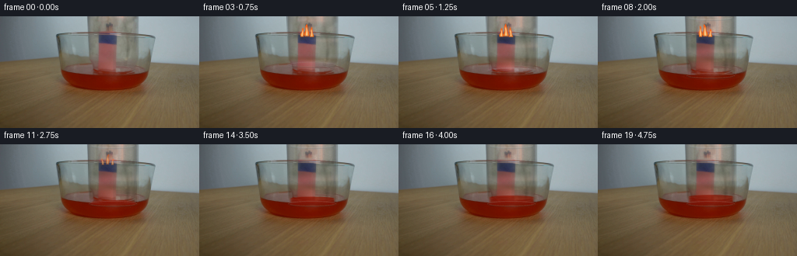
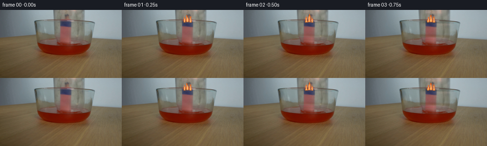

CODING AGENTS AS PIXEL WORLD MODELS
traex/GPT-6.1-Sol · 0165
点击播放 · 原生 RGB 像素
逐轮保存的候选
回放视频、检查图与代码变化。
每份候选均可单独播放。实际图片检查记录在下方工具轨迹中。
候选 01播放与检查图
点击播放 · 原生 RGB 像素

展开代码变化
--- 上一保存版本
+++ 本次保存版本
@@ -0,0 +1,180 @@
+from pathlib import Path
+import numpy as np
+from PIL import Image, ImageDraw, ImageFilter
+from scipy.ndimage import gaussian_filter, map_coordinates
+import artifact_io
+
+ROOT=Path(__file__).resolve().parent
+H,W=144,256
+S=np.asarray(Image.open(ROOT/'first_frame.png').convert('RGB'),dtype=np.float64)
+Y,X=np.mgrid[:H,:W].astype(float)
+
+# Separate the light transmitted through the moving glass from the fixed
+# demonstration apparatus. Estimate the unobstructed color from the two sides.
+ref=np.zeros_like(S)
+for y in range(H):
+ if y<19:
+ l=np.median(S[y,102:110],axis=0); r=np.median(S[y,182:190],axis=0)
+ lx,rx=106,186
+ else:
+ l=np.median(S[y,104:112],axis=0); r=np.median(S[y,180:188],axis=0)
+ lx,rx=108,184
+ u=np.clip((np.arange(W)-lx)/(rx-lx),0,1)[:,None]
+ ref[y]=l*(1-u)+r*u
+ratio=np.clip(S/np.maximum(ref,1),.50,1.19)
+# The opaque match bundle is stationary, and must not be part of the moving glass.
+for y in range(61):
+ a=np.median(ratio[y,120:126],axis=0)
+ b=np.median(ratio[y,151:159],axis=0)
+ for x in range(125,152):
+ u=(x-125)/26
+ ratio[y,x]=a*(1-u)+b*u
+# Do not carry the stationary bowl's upper lip along with the jar.
+for y in range(19,27):
+ u=(y-18)/9
+ ratio[y,110:181]=ratio[18,110:181]*(1-u)+ratio[27,110:181]*u
+ratio=gaussian_filter(ratio,sigma=(1.35,.48,0))
+# Jar's sides continue up out of view; its opening begins just above the liquid.
+edge=np.clip((X-111.8)/1.3,0,1)*np.clip((179-X)/1.5,0,1)
+end=np.clip((60.3-Y)/5.7,0,1)
+mask=edge*end
+T=1+(ratio-1)*mask[...,None]
+# A tiny source warm tip belongs to the active flame and is removed on quenching.
+B=np.clip(S/np.maximum(T,.35),0,255)
+
+# High resolution numerical coordinates for soft, irregular flame silhouettes.
+SS=4
+hy,hx=np.mgrid[:H*SS,:W*SS].astype(float)
+hx=(hx+.5)/SS-.5; hy=(hy+.5)/SS-.5
+rng=np.random.default_rng(123)
+noise=rng.normal(0,.6,(H,W))
+
+def over(im,color,alpha):
+ return im*(1-alpha[...,None])+np.asarray(color)*alpha[...,None]
+
+def flame(im,t,energy,through):
+ if energy<=0: return im
+ outer=np.zeros_like(hx); inner=np.zeros_like(hx); heightfield=np.zeros_like(hx)
+ # Several touching flames, driven by buoyancy rather than rigid translations.
+ for j,(cx,bas,h0,w0) in enumerate([(131.7,25.6,13.2,2.8),(137.7,25.0,17.3,3.5),(144.0,25.8,12.2,2.6)]):
+ flick=.91+.13*np.sin(t*13.1+j*2.4)+.07*np.sin(t*25.8+j*.8)
+ height=h0*flick*(.43+.57*energy)
+ q=(bas-hy)/height
+ bend=(1.1*np.sin(t*11+j*2)+.7*np.sin(t*18+j))*np.clip(q,0,1)**1.6
+ curve=cx+bend+.4*np.sin(q*9-t*12+j)*np.clip(q,0,1)
+ width=w0*(.25+.8*energy)*np.maximum(1-q,0)**.65*(.85+.17*np.sin(q*10+t*15+j))
+ valid=(q>-.07)&(q<1)
+ d=np.abs(hx-curve)/np.maximum(width,.08)
+ a=np.clip((1.13-d)*3.8,0,1)*np.clip((1-q)*9,0,1)*np.clip((q+.07)*12,0,1)*valid
+ # Softer orange sheath, with a narrow white-yellow reaction zone.
+ core=np.clip((.55-d)*4.0,0,1)*np.clip((.77-q)*5,0,1)*np.clip((q+.015)*10,0,1)*valid
+ outer=np.maximum(outer,a);inner=np.maximum(inner,core)
+ heightfield=np.maximum(heightfield,np.clip(q,0,1)*a)
+ def small(a):
+ return np.asarray(Image.fromarray(a.astype('float32'),'F').resize((W,H),Image.Resampling.LANCZOS)).clip(0,1)
+ a=small(outer)*energy
+ core=small(inner)
+ q=small(heightfield)
+ glow=gaussian_filter(a,2.9)
+ im=np.clip(im+glow[...,None]*np.array([33,12,1]),0,255)
+ col=np.zeros_like(im)
+ col[:,:,0]=248+6*core
+ col[:,:,1]=117+105*core-20*q
+ col[:,:,2]=25+123*core
+ col*=np.array([1,.96,.92]) if through else 1
+ im=over(im,col,a*.93)
+ # Small blue root at the darkened match heads.
+ root=np.exp(-((X-137.6)/5.0)**2-((Y-25.0)/.75)**2)*energy*.16
+ return over(im,[91,107,140],root)
+
+def line_layer(im,draw_func,opacity=1):
+ layer=Image.new('RGBA',(W*SS,H*SS),(0,0,0,0))
+ d=ImageDraw.Draw(layer)
+ draw_func(d)
+ layer=layer.resize((W,H),Image.Resampling.LANCZOS)
+ z=np.asarray(layer,dtype=float)
+ return over(im,z[:,:,:3],z[:,:,3]/255*opacity)
+
+def glass_rim(im,t,dy,dx,vis):
+ cx=145.0+dx; mouth=57.8+dy
+ def draw(d):
+ box=((cx-31.0)*SS,(mouth-3.7)*SS,(cx+31.0)*SS,(mouth+3.7)*SS)
+ d.arc(box,0,180,fill=(67,70,61,95),width=4)
+ d.arc(box,180,360,fill=(174,181,175,76),width=3)
+ box2=((cx-29.0)*SS,(mouth-2.45)*SS,(cx+29.0)*SS,(mouth+2.45)*SS)
+ d.arc(box2,4,177,fill=(199,195,178,78),width=2)
+ # Narrow oblique reflections at the two thick walls.
+ top=-17.8+dy
+ if top>-5:
+ b=((cx-32)*SS,(top-4.7)*SS,(cx+32)*SS,(top+4.7)*SS)
+ d.ellipse(b,outline=(119,136,140,96),width=4)
+ d.arc(((cx-28)*SS,(top-3.1)*SS,(cx+28)*SS,(top+3.1)*SS),4,166,fill=(187,198,193,96),width=3)
+ d.line([(113.9*SS+dx*SS,max(0,top)*SS),(115.1*SS+dx*SS,(mouth-2.2)*SS)],fill=(173,181,173,36),width=3)
+ d.line([(176.7*SS+dx*SS,max(0,top)*SS),(176.9*SS+dx*SS,(mouth-1.7)*SS)],fill=(203,210,198,48),width=3)
+ return line_layer(im,draw,vis)
+
+frames=[S.astype(np.uint8)]
+for k in range(1,20):
+ t=k/4
+ # Smooth hand-lowering motion; no camera movement or temporal rescaling.
+ u=np.clip((t-.15)/1.85,0,1)
+ e=u*u*(3-2*u)
+ dy=19.0*e
+ dx=.65*np.sin(np.pi*e)
+ sy=Y-dy; sx=X-dx
+ shifted=np.empty_like(T)
+ for c in range(3):
+ shifted[:,:,c]=map_coordinates(T[:,:,c],[np.maximum(sy,0),sx],order=1,mode='nearest')
+ # Above the closed end of the inverted jar is unobstructed background.
+ top=-17.8+dy
+ topmask=np.clip((Y-top+4.0)/2.0,0,1)
+ shifted=1+(shifted-1)*topmask[...,None]
+ im=B*shifted
+ # A slight lens-like displacement of the wall behind the curved right side.
+ # The original glass texture is retained as the main optical contribution.
+ settled=t>=2.0
+ energy=1.0 if t<2.0 else np.clip(1-(t-2.0)/1.45,0,1)**.75
+ # Extinguished flames leave dark match heads, not a persistent orange tip.
+ gone=1-energy
+ tip=np.exp(-((X-138.4)/8.4)**4-((Y-19.8)/3.1)**4)*gone*.72
+ clean=np.empty_like(im)
+ for y in range(H):
+ c1=im[y,123];c2=im[y,154]
+ f=np.clip((np.arange(W)-123)/31,0,1)[:,None]
+ clean[y]=c1*(1-f)+c2*f
+ im=over(im,clean,tip)
+ im=flame(im,t,energy,True)
+ # Gas cools after the flames cease; the pressure draws the colored water
+ # gently up into the jar. Its surface remains horizontal and settles.
+ rise=9.0*(1-np.exp(-max(t-2.65,0)/.75))
+ if rise>0:
+ level=75.2-rise
+ xr=(X-(145+dx))/29.5
+ rear=level-2.6*np.sqrt(np.clip(1-xr*xr,0,1))
+ fill=np.clip((Y-rear)/1.1,0,1)*np.clip((77.9-Y)/1.25,0,1)*np.clip((1-np.abs(xr))*10,0,1)
+ # Refracted red liquid, with retained transmitted wood and match texture.
+ liquid=im.copy()
+ liquid[:,:,0]=.40*im[:,:,0]+77+2.5*np.cos((X-139)/24)+noise
+ liquid[:,:,1]=.18*im[:,:,1]+15+noise*.4
+ liquid[:,:,2]=.10*im[:,:,2]+5+noise*.25
+ im=over(im,liquid,fill*.88)
+ men=np.exp(-((Y-(level+2.6*np.sqrt(np.clip(1-xr*xr,0,1))))/.5)**2)*(np.abs(xr)<1)
+ im=over(im,[157,73,55],men*.18)
+ # Brief curls of pale smoke rise from the quenched heads within the glass.
+ smoke_strength=np.clip((t-3.1)/.7,0,1)*np.exp(-max(t-3.7,0)/1.2)
+ if smoke_strength>0:
+ q=np.clip((25-Y)/24,0,1)
+ center=138+2*np.sin(q*6-t*2.7)*q
+ smoke=np.exp(-((X-center)/(1+2*q))**2)*np.exp(-((Y-16)/13)**2)*(Y<25)*smoke_strength*.10
+ im=over(im,[169,174,172],gaussian_filter(smoke,.65))
+ im=glass_rim(im,t,dy,dx,min(1,t/1.3)*.82)
+ # Damped capillary disturbance just where the opening meets the reservoir.
+ if 1.8<t<3.1:
+ amp=np.exp(-(t-1.8)*2)*.13
+ rr=np.sqrt(((X-145)/32)**2+((Y-77)/4.0)**2)
+ rip=np.exp(-((rr-(1.05+(t-1.8)*.32))/.075)**2)*amp
+ im=over(im,[150,78,53],rip)
+ frames.append(np.clip(np.rint(im),0,255).astype(np.uint8))
+
+frames=np.stack(frames)
+artifact_io.save(frames,ROOT)
候选 02播放与检查图
点击播放 · 原生 RGB 像素

展开代码变化
--- 上一保存版本
+++ 本次保存版本
@@ -71,7 +71,7 @@
outer=np.maximum(outer,a);inner=np.maximum(inner,core)
heightfield=np.maximum(heightfield,np.clip(q,0,1)*a)
def small(a):
- return np.asarray(Image.fromarray(a.astype('float32'),'F').resize((W,H),Image.Resampling.LANCZOS)).clip(0,1)
+ return np.asarray(Image.fromarray(a.astype('float32')).resize((W,H),Image.Resampling.LANCZOS)).clip(0,1)
a=small(outer)*energy
core=small(inner)
q=small(heightfield)
@@ -165,7 +165,7 @@
if smoke_strength>0:
q=np.clip((25-Y)/24,0,1)
center=138+2*np.sin(q*6-t*2.7)*q
- smoke=np.exp(-((X-center)/(1+2*q))**2)*np.exp(-((Y-16)/13)**2)*(Y<25)*smoke_strength*.10
+ smoke=np.exp(-((X-center)/(1+2*q))**2)*np.exp(-((Y-16)/13)**2)*(Y<25)*(Y>top+2)*smoke_strength*.10
im=over(im,[169,174,172],gaussian_filter(smoke,.65))
im=glass_rim(im,t,dy,dx,min(1,t/1.3)*.82)
# Damped capillary disturbance just where the opening meets the reservoir.
可观测工具轨迹
实际执行的命令与返回图片。
命令 1exit 0
/bin/bash -lc 'ls -la && cat prompt.txt && cat GENERATION_RULES.md'
命令 2exit 0
/bin/bash -lc "cat artifact_io.py && python - <<'PY'
from PIL import Image
import numpy as np
im=np.array(Image.open('first_frame.png').convert('RGB'))
print(im.shape)
# sampled color visual description via grid nearest palette codes
p={' ': (35,35,35), '.':(90,90,90), '-':(150,150,150),'w':(210,210,210),'W':(250,250,250),'r':(150,25,30),'R':(235,50,40),'s':(190,145,110),'S':(240,200,150),'y':(250,215,60),'o':(250,140,30),'b':(60,80,105)}
keys=list(p); vals=np.array(list(p.values()))
a=np.array(Image.fromarray(im).resize((128,72)))
idx=((a[:,:,None,:].astype(float)-vals)**2).sum(3).argmin(2)
for row in idx: print(''.join(keys[i] for i in row))
print('rows col samples')
for y in range(0,144,8):
print(y, [tuple(im[y,x]) for x in range(0,256,16)])
PY"命令 3exit 0
/bin/bash -lc "python - <<'PY'
from PIL import Image
import numpy as np
im=np.array(Image.open('first_frame.png')).astype(float)
print('min max',im.min(axis=(0,1)),im.max(axis=(0,1)))
# Determine palette from local RGB using simple kmeans
p=im[::2,::2].reshape(-1,3);rng=np.random.default_rng(1); c=p[rng.choice(len(p),20,False)]
for i in range(40):
lab=((p[:,None,:]-c)**2).sum(-1).argmin(-1);c=np.array([p[lab==j].mean(0) if (lab==j).any() else c[j] for j in range(len(c))])
order=c.mean(-1).argsort(); c=c[order]
chars='0123456789ABCDEFGHIJ'
for ch,v in zip(chars,c):print(ch,v.round(1))
a=np.array(Image.fromarray(im.astype('uint8')).resize((128,72)))
l=((a[:,:,None,:]-c)**2).sum(-1).argmin(-1)
print('Kmeans grid')
for y,row in enumerate(l): print(f'{y*2:3}', ''.join(chars[x] for x in row))
print('crop monochrome')
a=im[:85,65:200].mean(-1); ch=' .,:;ox%#@'
for y,row in enumerate(a): print(f'{y:3} '+''.join(ch[int(np.clip((v-30)/180*9,0,9))] for v in row))
PY"命令 4exit 0
/bin/bash -lc "python - <<'PY'
from PIL import Image
import numpy as np
im=np.array(Image.open('first_frame.png')).astype(float)
# Report small ROI precise pixel grid palette from manually differentiating categories
for roi in [(108,0,182,73),(124,8,150,70),(65,16,205,100)]:
x1,y1,x2,y2=roi;a=im[y1:y2,x1:x2]
if x2-x1>80:a=a[::2,::2]
print('\\nROI',roi)
for iy,row in enumerate(a):
s=''
for r,g,b in row:
if r-g>38 and r-b>35: c='R' if g>65 else 'r'
elif b-r>14: c='B'
elif r-g>10 and g-b>10: c='t' if r<140 else 'T'
elif max(r,g,b)<85: c='.'
elif max(r,g,b)<110:c=':'
elif max(r,g,b)<130:c='o'
elif max(r,g,b)<145:c='x'
elif max(r,g,b)<160:c='O'
elif max(r,g,b)<175:c='0'
elif max(r,g,b)<185:c='#'
else:c='@'
s+=c
print(f'{y1+iy*(2 if x2-x1>80 else 1):3} {s}')
# saturation extrema orange
m=(im[:,:,0]-im[:,:,1]>15)&(im[:,:,1]-im[:,:,2]>8)&(im[:,:,0]>150)
print('orange pixels',list(zip(*np.where(m)))[:200])
PY"命令 5exit 0
/bin/bash -lc "python - <<'PY'
import numpy as np
from PIL import Image
im=np.array(Image.open('first_frame.png')).astype(float)
# horizontal full RGB coarse top / rim / above liquid
for y in [0,10,19,20,21,22,23,24,34,35,36,50,58,63,67,69,70,71,72,73,74,75,76]:
print('\\ny',y)
for x in range(68,201,4):
print(f'{x}:{\",\".join(str(int(v)) for v in im[y,x])}',end=' ')
print()
# ROI red structure row pixel variation
for y in [36,42,50,60,66]:
print('red',y, im[y,125:154].astype(int).tolist())
PY"命令 6exit 0
/bin/bash -lc "python - <<'PY' import importlib.util for m in ['numpy','PIL','scipy','cv2']: print(m, bool(importlib.util.find_spec(m))) PY"
命令 7exit 0
/bin/bash -lc "python - <<'PY'
from PIL import Image
import numpy as np
im=np.array(Image.open('first_frame.png')).astype(int)
print('G minus R (glass neutral/yellow vs background cyan); x108..182')
for y in range(0,78):
row=im[y,108:183];vals=row[:,1]-row[:,0]
# + around15 blue wall ;0 glass;-50 matches
s=''.join('M' if v<-35 else 'R' if v<-15 else 't' if v<0 else 'o' if v<5 else '+' if v<10 else '#' if v<15 else '@' for v in vals)
print(f'{y:02} {s}')
print('center left/ right jar edge samples')
for y in range(0,78,2): print(y, im[y,110:118].tolist(),im[y,172:181].tolist())
PY"命令 8exit 0
/bin/bash -lc "cat > generate.py <<'PY'
from pathlib import Path
import numpy as np
from PIL import Image, ImageDraw, ImageFilter
from scipy.ndimage import gaussian_filter, map_coordinates
import artifact_io
ROOT=Path(__file__).resolve().parent
H,W=144,256
S=np.asarray(Image.open(ROOT/'first_frame.png').convert('RGB'),dtype=np.float64)
Y,X=np.mgrid[:H,:W].astype(float)
# Separate the light transmitted through the moving glass from the fixed
# demonstration apparatus. Estimate the unobstructed color from the two sides.
ref=np.zeros_like(S)
for y in range(H):
if y<19:
l=np.median(S[y,102:110],axis=0); r=np.median(S[y,182:190],axis=0)
lx,rx=106,186
else:
l=np.median(S[y,104:112],axis=0); r=np.median(S[y,180:188],axis=0)
lx,rx=108,184
u=np.clip((np.arange(W)-lx)/(rx-lx),0,1)[:,None]
ref[y]=l*(1-u)+r*u
ratio=np.clip(S/np.maximum(ref,1),.50,1.19)
# The opaque match bundle is stationary, and must not be part of the moving glass.
for y in range(61):
a=np.median(ratio[y,120:126],axis=0)
b=np.median(ratio[y,151:159],axis=0)
for x in range(125,152):
u=(x-125)/26
ratio[y,x]=a*(1-u)+b*u
# Do not carry the stationary bowl's upper lip along with the jar.
for y in range(19,27):
u=(y-18)/9
ratio[y,110:181]=ratio[18,110:181]*(1-u)+ratio[27,110:181]*u
ratio=gaussian_filter(ratio,sigma=(1.35,.48,0))
# Jar's sides continue up out of view; its opening begins just above the liquid.
edge=np.clip((X-111.8)/1.3,0,1)*np.clip((179-X)/1.5,0,1)
end=np.clip((60.3-Y)/5.7,0,1)
mask=edge*end
T=1+(ratio-1)*mask[...,None]
# A tiny source warm tip belongs to the active flame and is removed on quenching.
B=np.clip(S/np.maximum(T,.35),0,255)
# High resolution numerical coordinates for soft, irregular flame silhouettes.
SS=4
hy,hx=np.mgrid[:H*SS,:W*SS].astype(float)
hx=(hx+.5)/SS-.5; hy=(hy+.5)/SS-.5
rng=np.random.default_rng(123)
noise=rng.normal(0,.6,(H,W))
def over(im,color,alpha):
return im*(1-alpha[...,None])+np.asarray(color)*alpha[...,None]
def flame(im,t,energy,through):
if energy<=0: return im
outer=np.zeros_like(hx); inner=np.zeros_like(hx); heightfield=np.zeros_like(hx)
# Several touching flames, driven by buoyancy rather than rigid translations.
for j,(cx,bas,h0,w0) in enumerate([(131.7,25.6,13.2,2.8),(137.7,25.0,17.3,3.5),(144.0,25.8,12.2,2.6)]):
flick=.91+.13*np.sin(t*13.1+j*2.4)+.07*np.sin(t*25.8+j*.8)
height=h0*flick*(.43+.57*energy)
q=(bas-hy)/height
bend=(1.1*np.sin(t*11+j*2)+.7*np.sin(t*18+j))*np.clip(q,0,1)**1.6
curve=cx+bend+.4*np.sin(q*9-t*12+j)*np.clip(q,0,1)
width=w0*(.25+.8*energy)*np.maximum(1-q,0)**.65*(.85+.17*np.sin(q*10+t*15+j))
valid=(q>-.07)&(q<1)
d=np.abs(hx-curve)/np.maximum(width,.08)
a=np.clip((1.13-d)*3.8,0,1)*np.clip((1-q)*9,0,1)*np.clip((q+.07)*12,0,1)*valid
# Softer orange sheath, with a narrow white-yellow reaction zone.
core=np.clip((.55-d)*4.0,0,1)*np.clip((.77-q)*5,0,1)*np.clip((q+.015)*10,0,1)*valid
outer=np.maximum(outer,a);inner=np.maximum(inner,core)
heightfield=np.maximum(heightfield,np.clip(q,0,1)*a)
def small(a):
return np.asarray(Image.fromarray(a.astype('float32'),'F').resize((W,H),Image.Resampling.LANCZOS)).clip(0,1)
a=small(outer)*energy
core=small(inner)
q=small(heightfield)
glow=gaussian_filter(a,2.9)
im=np.clip(im+glow[...,None]*np.array([33,12,1]),0,255)
col=np.zeros_like(im)
col[:,:,0]=248+6*core
col[:,:,1]=117+105*core-20*q
col[:,:,2]=25+123*core
col*=np.array([1,.96,.92]) if through else 1
im=over(im,col,a*.93)
# Small blue root at the darkened match heads.
root=np.exp(-((X-137.6)/5.0)**2-((Y-25.0)/.75)**2)*energy*.16
return over(im,[91,107,140],root)
def line_layer(im,draw_func,opacity=1):
layer=Image.new('RGBA',(W*SS,H*SS),(0,0,0,0))
d=ImageDraw.Draw(layer)
draw_func(d)
layer=layer.resize((W,H),Image.Resampling.LANCZOS)
z=np.asarray(layer,dtype=float)
return over(im,z[:,:,:3],z[:,:,3]/255*opacity)
def glass_rim(im,t,dy,dx,vis):
cx=145.0+dx; mouth=57.8+dy
def draw(d):
box=((cx-31.0)*SS,(mouth-3.7)*SS,(cx+31.0)*SS,(mouth+3.7)*SS)
d.arc(box,0,180,fill=(67,70,61,95),width=4)
d.arc(box,180,360,fill=(174,181,175,76),width=3)
box2=((cx-29.0)*SS,(mouth-2.45)*SS,(cx+29.0)*SS,(mouth+2.45)*SS)
d.arc(box2,4,177,fill=(199,195,178,78),width=2)
# Narrow oblique reflections at the two thick walls.
top=-17.8+dy
if top>-5:
b=((cx-32)*SS,(top-4.7)*SS,(cx+32)*SS,(top+4.7)*SS)
d.ellipse(b,outline=(119,136,140,96),width=4)
d.arc(((cx-28)*SS,(top-3.1)*SS,(cx+28)*SS,(top+3.1)*SS),4,166,fill=(187,198,193,96),width=3)
d.line([(113.9*SS+dx*SS,max(0,top)*SS),(115.1*SS+dx*SS,(mouth-2.2)*SS)],fill=(173,181,173,36),width=3)
d.line([(176.7*SS+dx*SS,max(0,top)*SS),(176.9*SS+dx*SS,(mouth-1.7)*SS)],fill=(203,210,198,48),width=3)
return line_layer(im,draw,vis)
frames=[S.astype(np.uint8)]
for k in range(1,20):
t=k/4
# Smooth hand-lowering motion; no camera movement or temporal rescaling.
u=np.clip((t-.15)/1.85,0,1)
e=u*u*(3-2*u)
dy=19.0*e
dx=.65*np.sin(np.pi*e)
sy=Y-dy; sx=X-dx
shifted=np.empty_like(T)
for c in range(3):
shifted[:,:,c]=map_coordinates(T[:,:,c],[np.maximum(sy,0),sx],order=1,mode='nearest')
# Above the closed end of the inverted jar is unobstructed background.
top=-17.8+dy
topmask=np.clip((Y-top+4.0)/2.0,0,1)
shifted=1+(shifted-1)*topmask[...,None]
im=B*shifted
# A slight lens-like displacement of the wall behind the curved right side.
# The original glass texture is retained as the main optical contribution.
settled=t>=2.0
energy=1.0 if t<2.0 else np.clip(1-(t-2.0)/1.45,0,1)**.75
# Extinguished flames leave dark match heads, not a persistent orange tip.
gone=1-energy
tip=np.exp(-((X-138.4)/8.4)**4-((Y-19.8)/3.1)**4)*gone*.72
clean=np.empty_like(im)
for y in range(H):
c1=im[y,123];c2=im[y,154]
f=np.clip((np.arange(W)-123)/31,0,1)[:,None]
clean[y]=c1*(1-f)+c2*f
im=over(im,clean,tip)
im=flame(im,t,energy,True)
# Gas cools after the flames cease; the pressure draws the colored water
# gently up into the jar. Its surface remains horizontal and settles.
rise=9.0*(1-np.exp(-max(t-2.65,0)/.75))
if rise>0:
level=75.2-rise
xr=(X-(145+dx))/29.5
rear=level-2.6*np.sqrt(np.clip(1-xr*xr,0,1))
fill=np.clip((Y-rear)/1.1,0,1)*np.clip((77.9-Y)/1.25,0,1)*np.clip((1-np.abs(xr))*10,0,1)
# Refracted red liquid, with retained transmitted wood and match texture.
liquid=im.copy()
liquid[:,:,0]=.40*im[:,:,0]+77+2.5*np.cos((X-139)/24)+noise
liquid[:,:,1]=.18*im[:,:,1]+15+noise*.4
liquid[:,:,2]=.10*im[:,:,2]+5+noise*.25
im=over(im,liquid,fill*.88)
men=np.exp(-((Y-(level+2.6*np.sqrt(np.clip(1-xr*xr,0,1))))/.5)**2)*(np.abs(xr)<1)
im=over(im,[157,73,55],men*.18)
# Brief curls of pale smoke rise from the quenched heads within the glass.
smoke_strength=np.clip((t-3.1)/.7,0,1)*np.exp(-max(t-3.7,0)/1.2)
if smoke_strength>0:
q=np.clip((25-Y)/24,0,1)
center=138+2*np.sin(q*6-t*2.7)*q
smoke=np.exp(-((X-center)/(1+2*q))**2)*np.exp(-((Y-16)/13)**2)*(Y<25)*smoke_strength*.10
im=over(im,[169,174,172],gaussian_filter(smoke,.65))
im=glass_rim(im,t,dy,dx,min(1,t/1.3)*.82)
# Damped capillary disturbance just where the opening meets the reservoir.
if 1.8<t<3.1:
amp=np.exp(-(t-1.8)*2)*.13
rr=np.sqrt(((X-145)/32)**2+((Y-77)/4.0)**2)
rip=np.exp(-((rr-(1.05+(t-1.8)*.32))/.075)**2)*amp
im=over(im,[150,78,53],rip)
frames.append(np.clip(np.rint(im),0,255).astype(np.uint8))
frames=np.stack(frames)
artifact_io.save(frames,ROOT)
PY
python generate.py"命令 9exit 0
/bin/bash -lc "python - <<'PY'
from PIL import Image
import numpy as np
for k in [0,1,4,8,12,15,19]:
im=np.array(Image.open(f'frames/{k:02}.png'))
print('frame',k,'max',im.max(axis=(0,1)), 'mean change',np.abs(im.astype(float)-np.array(Image.open('first_frame.png')).astype(float)).mean())
# pixel palette ROI flame/glass
a=im[0:85,108:182]
print('palette R red, F bright flame, g glass, # wall, + smoke')
for y,row in enumerate(a[::2,::2]):
s=''
for r,g,b in row.astype(int):
if r>195 and r-g>30:c='F'
elif r>185 and g>160 and b<160:c='f'
elif r-g>35: c='R' if g>60 else 'r'
elif r-g>8:c='t'
elif g-r>10:c='#'
elif max(r,g,b)>145:c='+'
elif max(r,g,b)<95:c='.'
else:c='o'
s+=c
print(f'{y*2:2} {s}')
PY"命令 10exit 0
/bin/bash -lc "python - <<'PY'
p='generate.py'
s=open(p).read().replace(\"Image.fromarray(a.astype('float32'),'F')\", \"Image.fromarray(a.astype('float32'))\")
s=s.replace(\"*(Y<25)*smoke_strength*.10\", \"*(Y<25)*(Y>top+2)*smoke_strength*.10\")
open(p,'w').write(s)
PY
python generate.py
python - <<'PY'
import numpy as np
from PIL import Image
p=np.load('pixels.npz')['pixels']
f=np.stack([np.array(Image.open(f'frames/{i:02d}.png')) for i in range(20)])
assert f.shape==(20,144,256,3) and f.dtype==np.uint8
assert np.array_equal(f[0],np.array(Image.open('first_frame.png').convert('RGB')))
assert p.shape==(144,256,20)
print('Verified: 20 RGB frames, 256x144; first frame pixel-identical.')
print('Artifacts: pixels.npz, frames/, index.html')
PY"保存候选 2 份；完成命令 10 次；可验证图片返回 0 张。原始 API 响应与完整日志保留在本地。